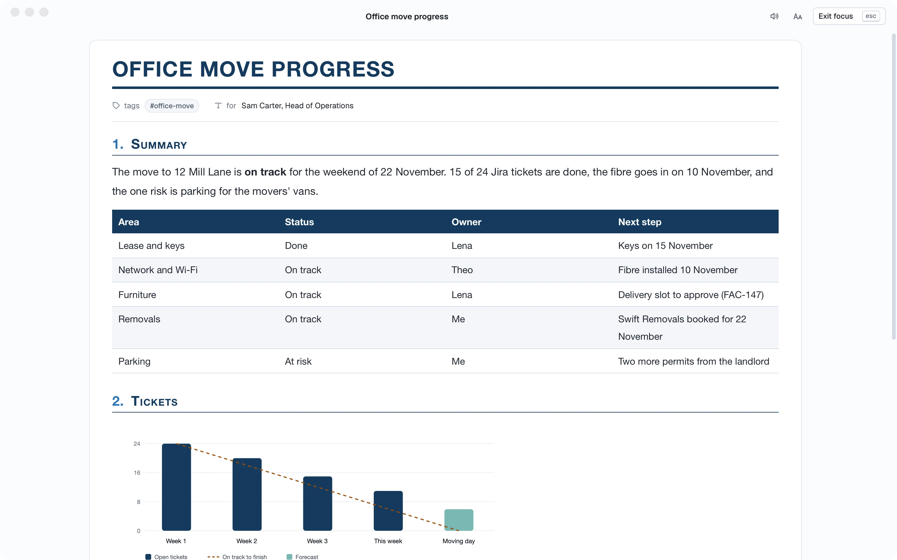
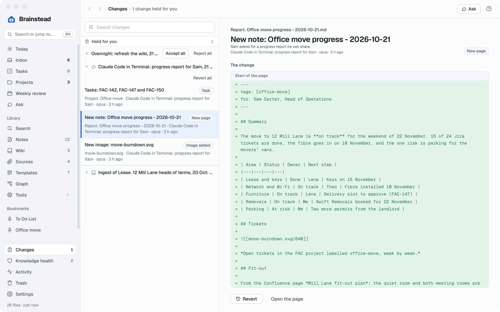
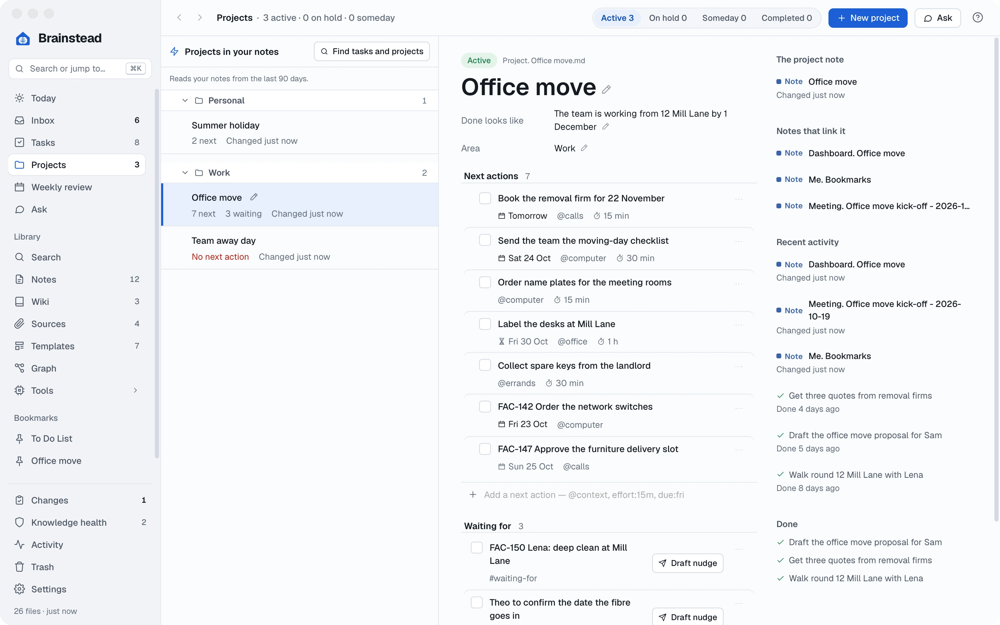
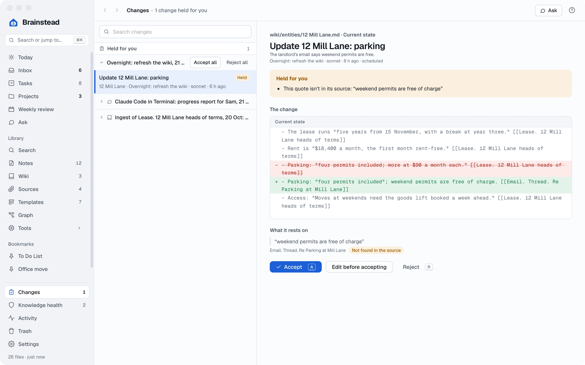

Tutorials › Power user
Command centre.
One sentence at a time.
Your assistant in Terminal, with Brainstead's tools and the rest of your stack: Jira, Confluence, Asana, Figma, Slack, GitHub and your calendar. Ten recipes that turn an afternoon's work into one request.
I'm using a
The commands below follow your choice.
The story so far
The move is two weeks out and it has spread everywhere. IT's work is in Jira, the fit-out plan in Confluence, facilities' jobs in Asana, the new signage in Figma, and the team talks it all over in Slack. Your own notes, tasks and wiki are in Brainstead.
An assistant with tools for all of them can join them up. Each recipe below shows a real session: what you type, the tools it calls, and what you get. Brainstead's tools make every change through the app, so all of it lands in Changes, where you can check it and undo it.
- A morning briefingfrom every tool
- A report for Samfrom Jira and Confluence
- Tickets and taskskept in step
- Overnight runsyou check over coffee
Connect everything.
An MCP server is a set of tools an assistant can use. Brainstead has one, and so do most of the tools you work in. Add them once, and every session can use them all together.
- In Brainstead, open Settings › AI assistants, find Brainstead's tools and copy the command for your assistant. Run it once in Terminal.
- Add the others the way each one's documentation says. Most are one
mcp addline, or a connector you switch on in your assistant's settings, then sign in once. - Check what's connected:
You run:
claude mcp list
Your terminal lists what Claude can use:
- brainstead: Brainstead --mcp — Connected
- atlassian (Jira, Confluence) — Connected
- asana — Connected
- figma — Connected
- slack — Connected
- github — Connected
- google-calendar — Connected
- Start your assistant from any folder:
claude. If Brainstead isn't open, its tools open it.
What it may change. Through Brainstead's tools an assistant changes your vault only as the screens do, with their checks, and every change is listed in Changes with Revert. Templates, runnable code and system notes are always held for you. The vault's CLAUDE.md tells assistants to use the tools instead of editing files.
The morning briefing.
Before you open a single app: what's due, what's new, what's on the calendar, and who asked you for something overnight.
- brainstead
- calendar
- slack
You ask Claude:
Brief me for today: my tasks, the Inbox, my calendar, and anything in #office-move that needs me. Capture whatever I have to act on.
Claude uses these tools:
- brainstead list_tasks view: today — 2 due, 1 overdue, 3 waiting
- brainstead list_inbox 6 items: 1 email, 1 transcript, 3 tasks, 1 thought
- calendar today's events 1-1 with Lena 10:00 · Leadership 14:00
- slack search #office-move, mentions since yesterday 2 messages for you
- brainstead capture task: Send Priya the parking permit form
- brainstead capture task: Reply to Jonas about desk labels
Claude briefs you, and two new tasks wait in your Inbox:
Today: book the removal firm (overdue since yesterday) and send the moving-day checklist. You're waiting on Theo (fibre date), Lena (seating plan) and the deep clean.
Calendar: your 1-1 with Lena at 10:00 has two open follow-ups: the quiet-room booking rules and the goods lift. Leadership at 14:00: Sam may ask about the move.
Slack: Priya needs the parking form, and Jonas asked how desks will be labelled. Both are in your Inbox now.
Then clear it. Follow up with "clarify the Inbox: suggest what each one is and wait for my yes". It uses clarify_inbox, the Inbox's own choices, one item at a time.
A progress report for Sam.
Sam wants an update for the leadership meeting. The facts are in four places. One request pulls them together into a report with a chart, in your vault, styled and ready to export.
- jira
- confluence
- asana
- brainstead
You ask Claude:
Write Sam a progress report on the office move for this afternoon. Use the FAC tickets labelled office-move in Jira, the "Mill Lane fit-out plan" page in Confluence, facilities' Asana project and my project in Brainstead. Status by area, a chart of open tickets by week, risks, and the decisions we need from him. Give it the Report look in dark blue.
Claude uses these tools:
- atlassian searchJiraIssuesUsingJql project = FAC AND labels = office-move — 24 tickets, 15 done
- atlassian getConfluencePage Mill Lane fit-out plan — updated yesterday by Lena
- asana tasks in "Office move — facilities" 11 tasks, 2 overdue
- brainstead list_projects Office move: 7 next actions, 3 waiting
- brainstead facts 12 Mill Lane: parking — four permits included (lease)
- brainstead add_image images/move-burndown.svg
- brainstead create_note Report. Office move progress - 2026-10-21
- brainstead note_look Report, dark blue
- brainstead open the report, in View
Claude writes the report into your vault and opens it in Brainstead:
Done: Office move progress is open in Brainstead. On track overall; 15 of 24 tickets closed; one risk (parking for the movers' vans) and two decisions for Sam. Press ⌘P to export the PDF.


Share it where Sam reads. Add "and post the summary as a comment on the FAC epic" or "and send it to #leadership in Slack". The PDF itself is one ⌘P away.
Jira and your tasks, in step.
Tickets live in Jira; your day lives in Brainstead. Bring yours across as next actions, other people's as waiting-fors, and send your progress back.
- jira
- brainstead
You ask Claude:
Put my open office-move tickets on the Office move project as next actions, with their due dates and the ticket number first. Tickets assigned to Lena or Theo that I'm watching go under Waiting for. Skip any already there.
Claude uses these tools:
- atlassian searchJiraIssuesUsingJql labels = office-move AND (assignee = currentUser() OR watcher = currentUser()) AND statusCategory != Done — 5
- brainstead list_tasks project: Office move — 2 tickets already there
- brainstead create_task FAC-142 Order the network switches · @computer · due Fri
- brainstead create_task FAC-147 Approve the furniture delivery slot · @calls · due Sun
- brainstead create_task FAC-150 Lena: deep clean at Mill Lane · #waiting-for
Claude adds the tickets to your project:
Three tickets added to Office move: two next actions and one waiting-for. Two were already on the project, so I left them.
Later, when you've ordered the switches and ticked the task:
You ask Claude:
I've ticked FAC-142. Close the ticket with a comment saying they arrive on 6 November.
Claude uses these tools:
- brainstead list_tasks done this week: FAC-142 Order the network switches ✓
- atlassian addCommentToJiraIssue FAC-142: Ordered; arriving 6 November.
- atlassian transitionJiraIssue FAC-142 → Done
Claude updates Jira:
FAC-142 is Done in Jira, with your comment.

From design to decision.
Priya has put three signage options for the new office in Figma. Get them in front of the team, gather the votes, and keep the outcome where you'll find it.
- figma
- brainstead
- slack
You ask Claude:
Take the three frames on the "Options" page of Priya's "Mill Lane signage" Figma file and make a decision note with a picture of each and its pros and cons. Then ask #office-move to vote by Thursday, and give me a task to tally the votes.
Claude uses these tools:
- figma get metadata Mill Lane signage › Options — 3 frames
- figma get screenshot ×3 Wayfinding, Minimal, Bold colour
- brainstead add_image ×3 images/signage-wayfinding.png, …
- brainstead create_note Decision. Mill Lane signage - 2026-10-21
- slack send message #office-move: three options, vote with an emoji by Thursday
- brainstead create_task Tally the signage votes · Office move · due Thu
Claude makes the note, starts the vote and adds your task:
The decision note has the three options side by side. The vote is up in #office-move, and you have a task for Thursday. When it's in, say "record the result in the decision note".
The lease changed.
The landlord's agent sends revised terms as a PDF. What actually changed, does the wiki still hold, and what do you say back?
- brainstead
You ask Claude:
Add ~/Downloads/Mill Lane terms v2.pdf to Sources, compare it with the first heads of terms, update the wiki, and draft a reply to the agent's email questioning anything that got worse for us.
Claude uses these tools:
- brainstead import_sources sources/Mill Lane terms v2.pdf
- brainstead compare_docs 3 differences: break clause, service charge, parking
- brainstead start_run ingest: Mill Lane terms v2.pdf
- brainstead run_status done — 2 pages updated, every quote found
- brainstead facts 12 Mill Lane › break: year three → year two (superseded)
- brainstead draft_reply Re Revised terms — partly answered, 1 gap
Claude sums up what changed, updates the wiki and drafts the reply:
Three changes: the break moves to year two (better for us), a new service charge of $1,100 a month (worse), and parking is now three permits, not four (worse).
12 Mill Lane and Moving day are updated, each change quoting the new terms. The draft reply asks about the service charge and the lost permit; it leaves the start date of the service charge for you to fill in.
Nothing quietly overwritten. The wiki keeps the old value as superseded, with its date and quote, so "what did the first terms say about parking?" still has an answer.
After the meeting.
The weekly check-in was on Teams. Its actions belong in three different systems. Write it up once, and send each action where it'll get done.
- brainstead
- jira
- asana
- slack
You ask Claude:
Write up today's office move check-in. Then: IT actions become FAC tickets for Theo, facilities actions go to Lena in Asana, mine stay as tasks. Post a three-line summary to #office-move.
Claude uses these tools:
- brainstead list_transcripts Office move check-in - 2026-10-21
- brainstead start_run meeting_note — made from your Meeting template, ingested
- brainstead read_section Meeting. Office move check-in - 2026-10-21 › Actions — 5 actions
- atlassian createJiraIssue ×2 FAC-158 Be on site for the fibre engineer · FAC-159 Label the comms room ports
- asana create task ×2 Book the goods lift · Order kitchen supplies (Lena)
- brainstead edit_task ×4 ticket numbers added; Theo's and Lena's marked waiting for
- slack send message #office-move: check-in summary
Claude writes the note and sends each action where it belongs:
The meeting note is in your vault and the wiki. Two tickets for Theo, two Asana tasks for Lena, and your one action, Send the moving-day checklist, is due Friday. The summary is posted.
The weekly review, in Terminal.
Friday afternoon. Do the review as a conversation: the assistant walks the same steps as the screen, using what Brainstead prepared from your week.
- brainstead
- github
You ask Claude:
Let's do my weekly review. Go step by step, accept the obvious suggestions and ask me about the rest. Also check whether Theo's pull request for the new office Wi-Fi settings has been merged.
Claude uses these tools:
- brainstead weekly_review week 43 · 14 suggestions prepared
- brainstead weekly_step start — Collect loose ends
- brainstead weekly_suggestion ×9 3 ticked, 2 deferred, 4 Inbox items clarified
- github pull request #212 acme/office-network: merged yesterday
- brainstead edit_task ticked: Theo to confirm the Wi-Fi settings
- brainstead list_projects Team away day: no next action
- brainstead create_task Ask the team for three dates · Team away day
- brainstead weekly_step finish — Me. Weekly Review - 2026-W43
Claude finishes the review and saves its note:
Review saved. Nine suggestions accepted, the Wi-Fi settings are merged so I ticked that waiting-for, and Team away day has a next action again. Five left for you, listed in the review note.
While you sleep.
Let the assistant do the routine work before you're up: ingest what arrived, tidy the wiki, and leave a briefing. Run with nobody watching, anything that fails a check is held for you, not made.
- brainstead
- slack
- notion
- Write the job down in a file,
overnight.md:Use Brainstead's tools with unattended: true on every call. 1. Ingest every source still New (pending_sources, start_run). 2. Run the Knowledge health safe fixes (lint, fix_health). 3. Read new messages in #office-move and the team's Notion "Move FAQ"; capture anything that needs me. 4. Write "Briefing. <today>" with what changed and what's held. - Schedule it for 6am on weekdays:
crontab -e 0 6 * * 1-5 claude -p "$(cat ~/overnight.md)" --allowedTools "mcp__brainstead__*,mcp__slack__*,mcp__notion__*"schtasks /create /tn "Brainstead overnight" /sc weekly /d MON,TUE,WED,THU,FRI /st 06:00 /tr "powershell -c claude -p (Get-Content ~\overnight.md -Raw) --allowedTools 'mcp__brainstead__*,mcp__slack__*,mcp__notion__*'"
- In the morning, open Changes. What passed every check is already made; what didn't waits under Held for you, with the reason.

Keep your summaries honest. Add the job under Settings › Jobs & schedule › Tools that start sessions, and the daily summary counts its sessions as automated, not as your work.
Your own commands.
Found a recipe you use every week? Save it as a command, and run it with a word.
- Make a file in your assistant's commands folder. For Claude Code,
~/.claude/commands/progress-report.md:Write a progress report on the project $ARGUMENTS for Sam. Use its Jira tickets, its Confluence pages, its Asana project and its Brainstead project. Status by area, a chart of open tickets by week, risks and decisions needed. Report look, dark blue. Open it in Brainstead when it's done. - Run it from any session:
You type:
/progress-report Office move
Claude follows the recipe, as in recipe 3, for the project you named.
Ideas for more. /friday for the weekly review and a Slack update; /one-on-one Lena to prepare a 1-1 from your last notes, her Jira and Asana work and your open follow-ups; /standup for what you did yesterday, from Brainstead's daily summary and GitHub. Ask the assistant "what can Brainstead's tools do?" and it reads Brainstead's own help.
Your whole stack, one conversation.
Brainstead keeps your notes, tasks and wiki; your other tools keep theirs. The assistant joins them up, and you keep the last word. You learned to:
- Connect Brainstead and other MCP servers
- Brief yourself across every tool
- Build reports from Jira and Confluence
- Keep tickets and tasks in step
- Compare documents and update the wiki
- Route meeting actions to the right system
- Run jobs unattended, safely
- Save recipes as your own commands